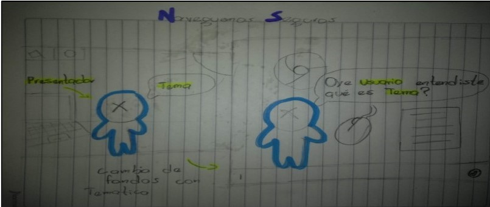
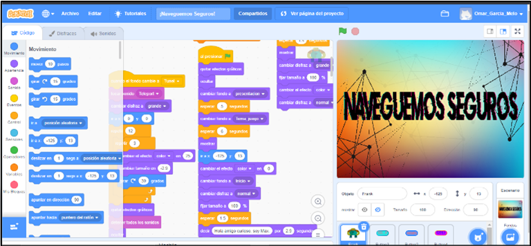
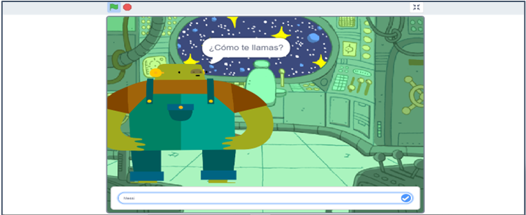

El problema identificado es que los jóvenes del grado quinto de la Institución Educativa Hector Abad Gómez y algunas personas del común no saben identificar las paginas, anuncios o mensajes engañosos, también, desconocer que se puede correr el riesgo de ser estafado, perder sus datos o ser suplantados.
NAVEGUEMOS SEGUROS
MARCO TEORICO
IDEA
Se nos ocurrió crear una herramienta didáctica que enseñe cómo prevenir e identificar los riesgos y peligros del internet a las personas que no están informadas o lo desconocen, especialmente los jóvenes de la Institución Educativa Hector Abad Gómez.

METODOLOGIA
| PLANTEAMIENTO | DESARROLLO | VALIDACION |
|---|---|---|
| Realizamos el planteamiento de un videojuego para enseñar a los jóvenes de quinto grado de la I.E. Hector Abad Gómez acerca de cómo navegar seguros en la web. | Desarrollamos el videojuego mediante la utilización de la herramienta Scratch, a partir de los conocimientos aprendidos en clase. | Validamos el videojuego mediante pruebas a familiares, profesores y personal capacitado. |
|  |  |  |
SEGURIDAD EN INTERNET
La seguridad en internet son todas aquellas precauciones que se toman para proteger todos los elementos que hacen parte de la red como infraestructura e información, la más afectada por delincuentes cibernéticos. El estar conectados a la red ya nos hace vulnerables. Su objetivo es establecer reglas y medidas que usar contra ataques en Internet.